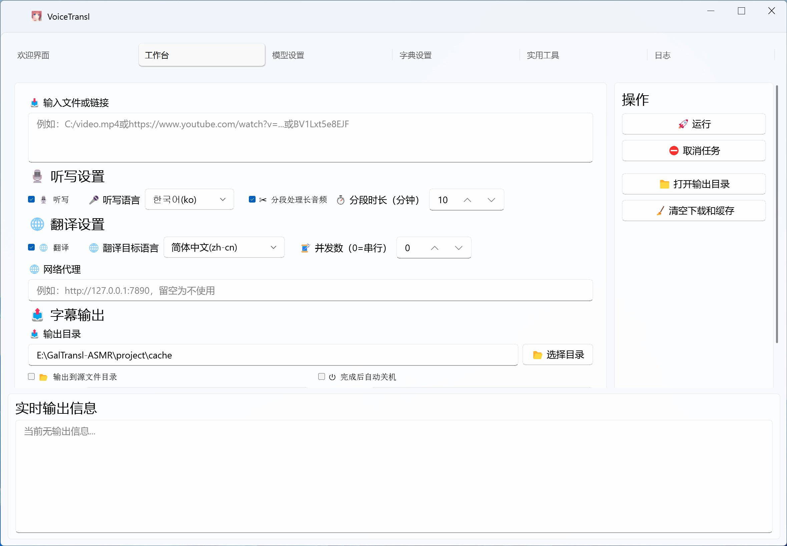

声音，成为文字。
Qwen3-ASR 听写与强制对齐，配合语音检测，将音视频转为带时间轴的字幕。
了解听写模式离线优先 · 开源 AI 字幕工具
从一段声音，到全新的理解。
用聆译完成视频听写、字幕翻译与合成，让每一句话都被听见。
Windows & macOS GPLv3 开源

为每一个翻译者
灵活选择模型，保留你的工作习惯。
将精力留给内容本身。
Qwen3-ASR 听写与强制对齐，配合语音检测，将音视频转为带时间轴的字幕。
了解听写模式连接在线或本地翻译模型，用字典、世界书与台本，让术语和上下文有据可依。
了解翻译模式视频下载、批量处理、字幕合并与视频合成，把分散的步骤串成完整流程。
了解完整模式支持在线模型（任意OpenAI兼容接口）和本地模型（Sakura、Galtransl及Ollama、Llamacpp）。
支持AMD/NVIDIA/Intel GPU加速，翻译引擎支持调整显存占用。
支持音频、视频、SRT字幕文件。
支持SRT字幕、LRC字幕文件。
支持日语，英语，韩语，俄语，法语等多种语言。
使用 CrispASR 的 Qwen3-ASR 与强制对齐工作流，生成准确的带时间轴字幕。
自动识别音频中的语音段落，配合长音频分段处理提升听写效率。
可以自定义翻译字典，替换输入输出内容。
支持输入世界书、台本等参考资料，为角色、术语和上下文提供翻译依据。
支持从YouTube/Bilibili及媒体链接直接下载视频。
支持文件和链接批量处理，自动识别文件类型。
支持音频切分、字幕合并、视频合成，以及端到端批处理流程。
可自定义 Prompt，将视频内容总结为简短、带时间轴的文本。
支持多种分离模型，将人声与伴奏分离，便于听写与后期处理。
按你的方式使用
只下载、只听写，或完成整个翻译流程。
四种模式，自由选择。
一站式字幕工作流
填写音视频文件或视频链接，选择听写与翻译模型，在同一个流程中完成下载、识别和翻译。
先把声音变成字幕
使用听写模型识别音视频中的语音，生成带时间轴的字幕，方便后续编辑或翻译。
让已有字幕说另一种语言
导入已有字幕，使用在线或本地模型完成翻译，无需重新识别音频。
为下一步准备好素材
支持 YouTube、Bilibili 及媒体链接下载，将在线视频保存下来，留待后续处理。
让开源持续生长
你的支持，将帮助昕蒲持续改进和维护项目。
也欢迎用一个 Star，为聆译加油。
本软件仅供学习交流使用，不得用于商业用途。本软件不对任何使用者的行为负责，不保证翻译结果的准确性。使用本软件即代表您同意自行承担使用本软件的风险，包括但不限于版权风险、法律风险等。请遵守当地法律法规，不要使用本软件进行任何违法行为。